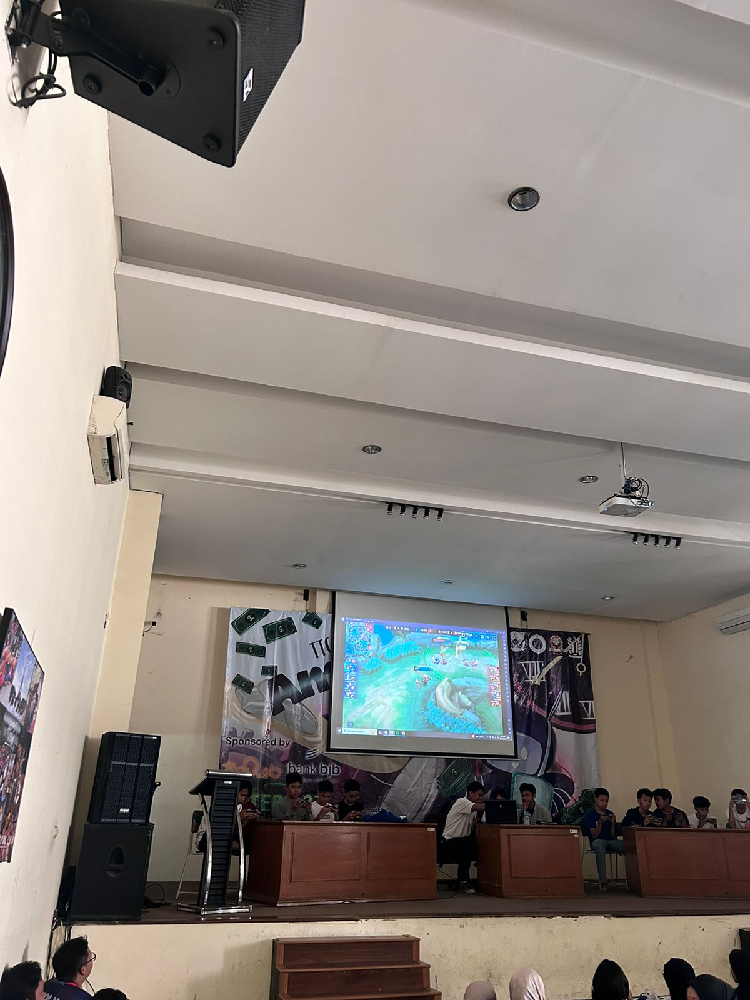

Kalau dilihat dari arti bahasa Inggrisnya,TTC adalah pertemuan antar kelas, ya.
Secara lebih lengkap, TTC merupakan kegiatan yang mempertemukan siswa-siswa antar kelas
dalam bentuk lomba atau pertandingan.
Agenda TTC dilaksanakan secara rutin setiap tahun di akhir semester.Setelah menjalani PAS yang mungkin cukup membuat stres, class meeting menjadi ajang untuk melepaskan semua penat dan lelah, yang artinya semua pembelajaran dan materi pada semester tersebut juga sudah habis.
Saat program class meeting, biasanya berbagai kegiatan banyak yang dilombakan, di mana seluruh peserta didik wajib mengikuti rangkaian kegiatan yang telah dirancang oleh tim panitia.
Kegiatan tersebut umumnya terdiri dari perlombaan olahraga dan yang non-olahraga.
Sepak bola, bola basket, voli, catur, hingga e-sport termasuk
jenis olahraga yang banyak dilombakan saat class meeting, sementara untuk perlombaan
non-olahraga, seperti cerdas cermas, pembacaan puisi, lomba kreativitas siswa, fashion show,
dan masih banyak yang lainnya Saat program class meeting, biasanya berbagai kegiatan banyak yang dilombakan, di mana seluruh peserta didik wajib mengikuti rangkaian kegiatan yang telah dirancang oleh tim panitia.
Kegiatan tersebut umumnya terdiri dari perlombaan olahraga dan yang non-olahraga.
Saat program class meeting, biasanya berbagai kegiatan banyak yang dilombakan, di mana seluruh peserta didik wajib mengikuti rangkaian kegiatan yang telah dirancang oleh tim panitia.
Kegiatan tersebut umumnya terdiri dari perlombaan olahraga dan yang non-olahraga.
.